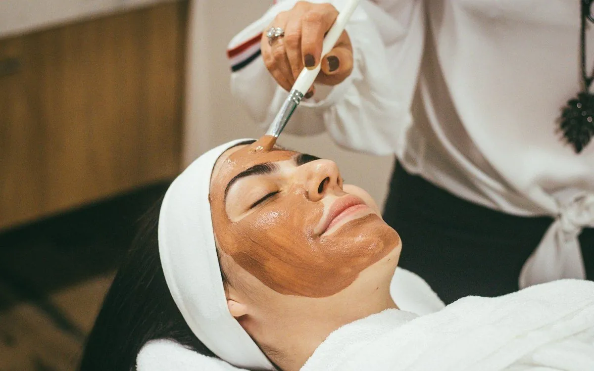
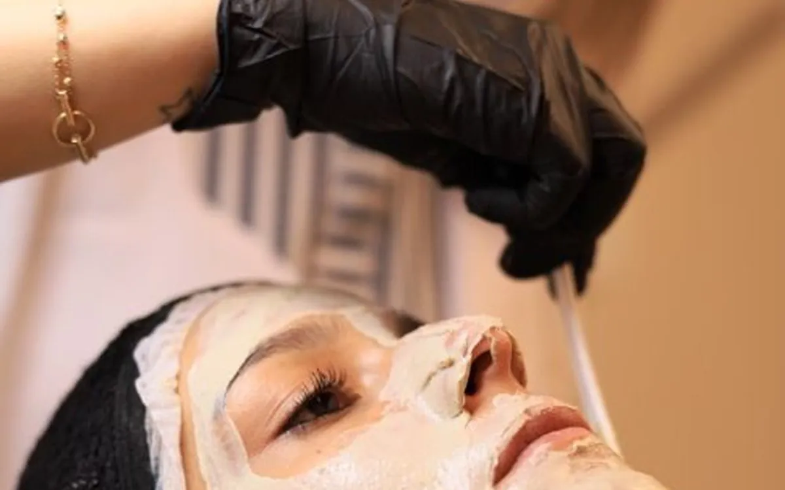
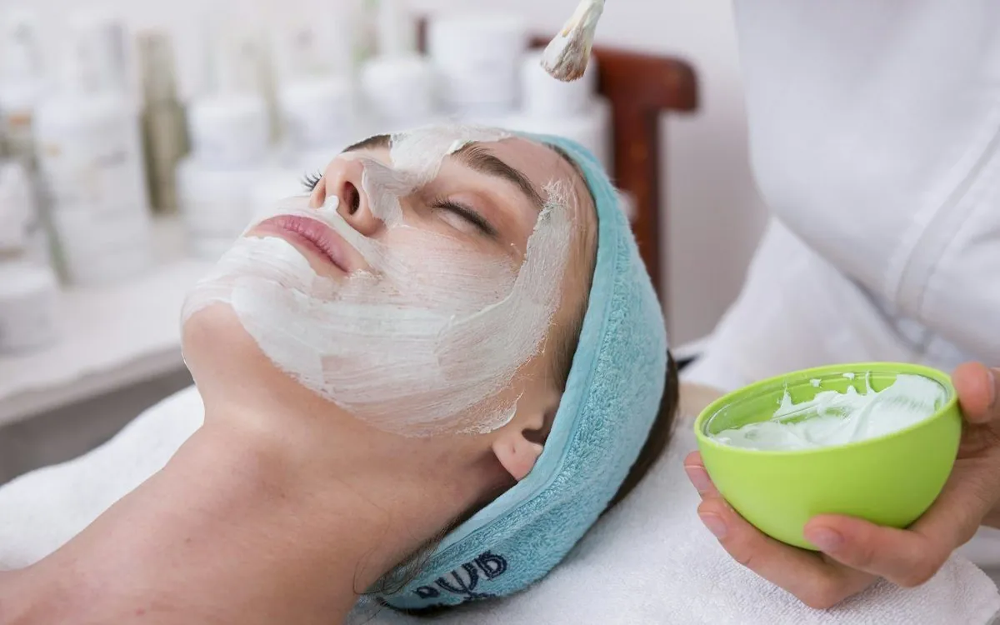
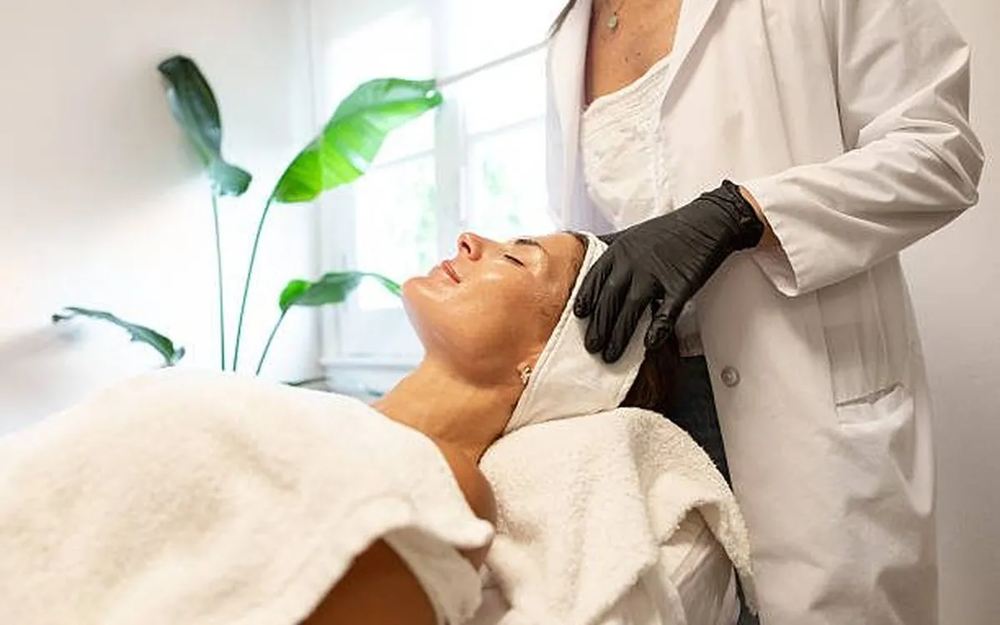
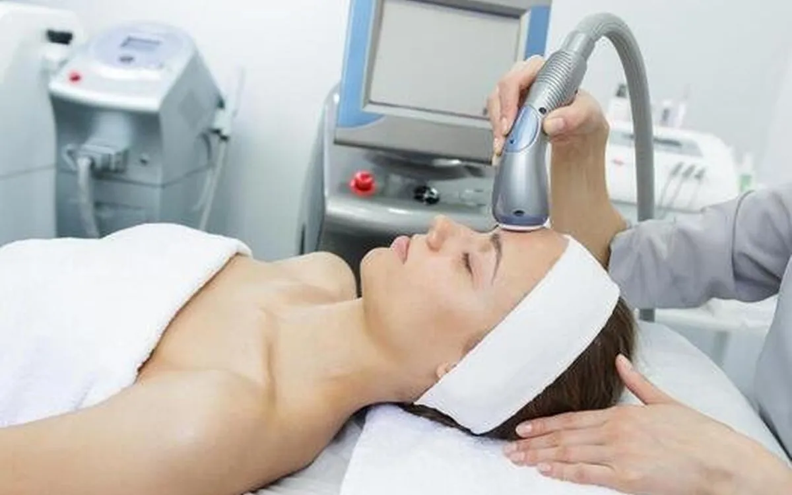
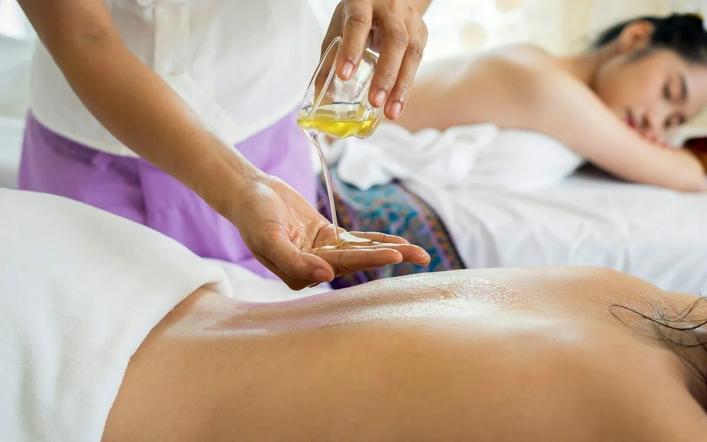
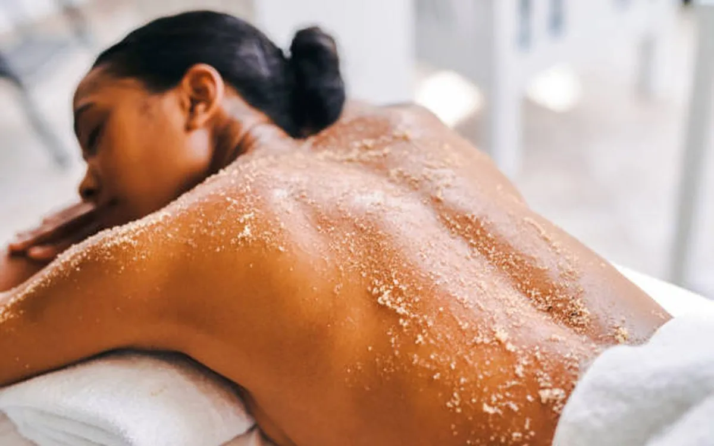
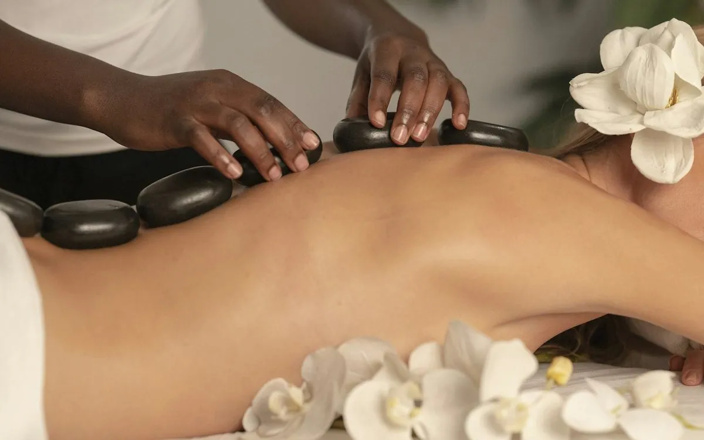
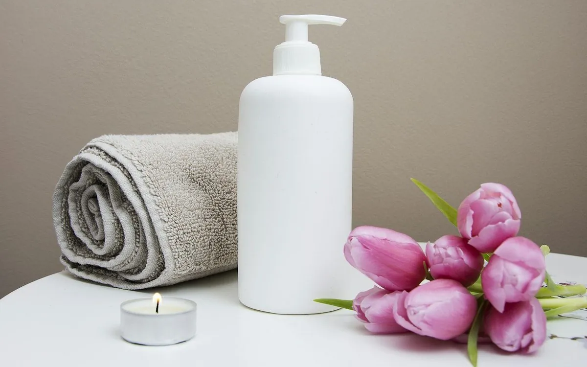
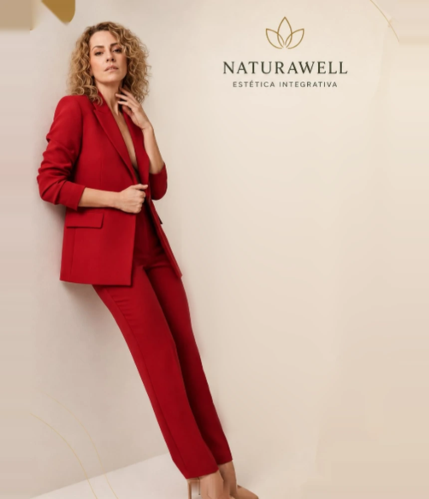

Consulta integrativa e exames
Tudo começa com uma consulta integrativa feita para você: escuta, análise da pele e do corpo e, quando é preciso, exames para entender a raiz do problema antes de qualquer tratamento.
Na Naturawell a gente olha para você por inteiro. Antes de indicar qualquer procedimento, entendemos sua pele, sua rotina e o momento que você está vivendo. O resultado vem de forma natural, no seu tempo e sem exagero.
Dra. Cristina Samy
“Cuidando da beleza de dentro para fora.”
@estetica_naturawell
A nossa forma de cuidar
A estética evoluiu, e a Naturawell evoluiu junto. Hoje, muita coisa que aparece no espelho começa bem antes dele: na inflamação, nos hormônios, no metabolismo, na retenção de líquido e no emocional. É o corpo em desequilíbrio pedindo atenção. Por isso, antes de qualquer protocolo, a gente procura a raiz do problema, e não apenas o sintoma.
Depois dessa investigação, montamos o seu protocolo unindo o que fizer sentido para o seu caso: estética integrativa, desinflamação corporal, massagens terapêuticas, suplementação e orientação de alimentação anti-inflamatória. Às vezes, o melhor começo é o mais simples. O importante é que faça sentido para você e para a sua rotina.
Conversar sobre o meu casoTudo começa com uma consulta integrativa feita para você: escuta, análise da pele e do corpo e, quando é preciso, exames para entender a raiz do problema antes de qualquer tratamento.
Só depois de entender a causa é que montamos o seu plano, por etapas, combinando o facial, o corporal e o integrativo quando faz sentido.
Revisões, ajustes e registro da sua evolução. Resultado bonito é resultado construído, e acompanhado de perto.
Tratamentos
A indicação final é sempre feita em avaliação. Aqui você conhece as principais frentes de trabalho da clínica. Toque em uma categoria para filtrar.
Mostrando todos os tratamentos

Equilíbrio e proporção com naturalidade, respeitando seus traços. Nada de rosto padronizado: o plano é desenhado para o seu rosto.
Tenho interesse →
Firmeza e qualidade de pele construídas de forma progressiva, estimulando o seu próprio colágeno. Um dos queridinhos de quem busca resultado duradouro e natural.
Tenho interesse →
Limpeza, hidratação, revitalização e protocolos para manchas, oleosidade e sensibilidade. Tudo definido depois de analisar sua pele de perto.
Tenho interesse →
Serve para suavizar marcas de expressão e valorizar o contorno do rosto. Também trabalhamos com preenchimento labial, sempre com bom senso e técnica.
Tenho interesse →
Tecnologias para firmeza, contorno e qualidade da pele, indicadas conforme o grau de flacidez e o seu objetivo.
Tenho interesse →
Massagem terapêutica e drenagem para aliviar tensão, retenção de líquido e aquela sensação de corpo pesado. É um cuidado que você sente na hora e percebe no espelho.
Tenho interesse →
Planos combinados para contorno, firmeza e textura da pele, com acompanhamento de medidas, fotos e evolução real.
Tenho interesse →
Volume e contorno com ácido hialurônico, com avaliação criteriosa de indicação, quantidade e expectativa de resultado.
Tenho interesse →
Quando o corpo está inflamado, a pele costuma responder. Com desinflamação corporal, suplementação orientada e alimentação anti-inflamatória, a gente cuida da base para os outros tratamentos renderem melhor.
Tenho interesse →Não sabe por onde começar? É normal. Agende uma avaliação e a gente indica o caminho com calma. Você não precisa fechar pacote para ser atendida.

Quem cuida de você
“Com 20 anos eu era frágil. Hoje, com meus 50 anos, me sinto tão forte, tão linda, tão capaz.”
É dessa vivência real, sem filtro, que nasce a Naturawell. A Cristina Samy defende uma estética que não apaga quem você é. Ela revela. Por isso, cada atendimento começa com uma boa conversa e termina com um plano que respeita sua história, seu tempo e o seu bolso. Porque beleza de verdade não é excesso. É equilíbrio.
Resultados
Publicamos antes & depois reais, com autorização, nos destaques do nosso Instagram. Arraste o controle abaixo e veja como um protocolo bem conduzido transforma a pele aos poucos.
Imagem ilustrativa do efeito de um protocolo. Resultados variam de pessoa para pessoa.
“Eu cheguei achando que precisava de um procedimento. Saí com um plano, e, pela primeira vez, entendi a minha pele. O resultado veio, mas a confiança veio antes.”
Nos destaques Resultados e Feedback do Instagram você acompanha evoluções e relatos de quem já passou por aqui.
Abrir @estetica_naturawell Ver avaliações no Google →Endereços
São dois endereços no Batel, pertinho da Praça do Japão. Escolha o mais prático para você e agende com antecedência, porque atendemos com hora marcada.
Av. Sete de Setembro, 4923, sala 804
Batel, Curitiba, PR
Av. do Batel, 1230, sala 310
Batel, Curitiba, PR
Agendamento
Preencha ao lado e a gente recebe tudo organizado no WhatsApp: seu nome, a unidade que você prefere e o que quer cuidar. Sem cadastro e sem senha.
Prefere só chamar? (41) 99553-0376
Dúvidas Frequentes
Sim, e é por um bom motivo. Antes de qualquer protocolo, fazemos uma consulta integrativa personalizada para entender sua pele, seu histórico, suas expectativas e seu orçamento, e, quando é preciso, solicitamos exames para investigar a causa. Muitas vezes, o que você imaginava precisar nem é o mais indicado. Consulta primeiro, tratamento depois.
Esse é justamente o nosso jeito de trabalhar: valorizar seus traços, não transformá-los em outro rosto. Trabalhamos com resultados progressivos e proporcionais, quem te encontrar vai notar você mais descansada e confiante, não “mexida”.
É olhar além do sintoma. Inflamação, intestino, sono, hormônios e estresse aparecem na pele e no corpo. Quando tratamos a causa, com protocolo, massagem, suplementação orientada e acompanhamento, o resultado tende a ser mais completo e duradouro.
Depende do tratamento, mas quase sempre são cuidados simples: protetor solar, evitar treino por um ou dois dias, esse tipo de coisa. Você sai da clínica sabendo exatamente o que fazer em casa, sem precisar adivinhar nada.
Melhor ainda: venha sem saber. No formulário de agendamento, escolha “Quero uma avaliação primeiro”. A Dra. Cristina Samy indica o caminho com calma, e, se não for o momento de fazer nada, ela vai te dizer isso também.
Bem-vinda à nova era da Naturawell
Atendimento com hora marcada, Batel, Curitiba, PR, @estetica_naturawell